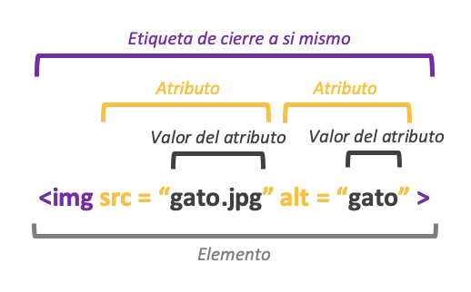

Enciclopedia
ramaEMA
search
html
Lista de etiquetas de HTML
!DOCTYPE html
declaración define que este documento es un documento HTML5
cerrar
h1/h2/h3/h4/h5/h6
Los encabezados HTML son títulos o subtítulos que desea mostrar en una página web.El h1 seria el titulo principal( mas grande) y el h6 el mas chico
cerrar
p
El elemento HTML "p" define un párrafo.Un párrafo siempre comienza en una nueva línea y los navegadores agregan automáticamente un espacio en blanco (un margen) antes y después de un párrafo.
cerrar
br
Úselo "br" si desea un salto de línea (una nueva línea) sin comenzar un nuevo párrafo. Es una etiqueta vacía, lo que significa que no tiene una etiqueta final.
cerrar
hr
Se muestra como una regla horizontal (crea una linea). El "hr" es un elemento que se usa para separar el contenido en una página HTML:
cerrar
b
La etiqueta "b" especifica texto en negrita sin ninguna importancia adicional.
ejemplo
cerrar
del
Para definir el texto eliminado
ejemplo
cerrar
i
La etiqueta define una parte del texto en una voz o estado de ánimo alternativo. El contenido interior normalmente se muestra en cursiva .La "i" etiqueta se usa a menudo para indicar un término técnico, una frase de otro idioma, un pensamiento, el nombre de un barco, etc.
ejemplo
cerrar
mark
La etiqueta "mark" define el texto que debe marcarse o resaltarse.
ejemplo
cerrar
small
La etiqueta "small" define texto más pequeño (como derechos de autor y otros comentarios secundarios). Sugerencia: esta etiqueta no está obsoleta, pero es posible lograr un mejor efecto con CSS.
cerrar
u
Crea un texto subrayado, Sugerencia: ¡Evite usar el "u" donde podría confundirse con un hipervínculo!
ejemplo
cerrar
sub
El texto del subíndice aparece medio carácter por debajo de la línea normal y, a veces, se representa en una fuente más pequeña. El texto de subíndice se puede utilizar para fórmulas químicas, como H
2
O.
ejemplo
cerrar
sup
El texto en superíndice aparece medio carácter por encima de la línea normal y, a veces, se representa en una fuente más pequeña. El texto en superíndice se puede utilizar para notas al pie, como WWW
[1]
como por
ejemplo
.
cerrar
a
La etiqueta "a" define un hipervínculo, que se utiliza para enlazar de una página a otra. El atributo más importante del elemento es el href atributo, que indica el destino del enlace. "a" href="https://www.w3schools.com">Visit W3Schools.com! "/a"
cerrar
terget-self/blank/parent/top
El "target" atributo especifica dónde abrir el documento vinculado....El "blank" Abre el documento vinculado en una nueva ventana o pestaña...el "parent" Abre el documento vinculado en el marco principal...El "top" Abre el documento vinculado en el cuerpo completo de la ventana"
cerrar
id
El atributo HTML idse usa para especificar una identificación única para un elemento HTML. No puede tener más de un elemento con la misma identificación en un documento HTML.
cerrar
img
La etiqueta "img" se utiliza para incrustar una imagen en una página HTML.Técnicamente, las imágenes no se insertan en una página web; las imágenes están vinculadas a páginas web. La etiqueta "img" tiene dos atributos obligatorios:
src:
especifica la ruta a la imagen
alt:
especifica un texto alternativo para la imagen, si la imagen por algún motivo no se puede mostrar
cerrar
ul
La etiqueta "ul" define una lista desordenada (con viñetas). Use la etiqueta "ul" junto con la etiqueta "li" para crear listas desordenadas.
°ejemblo
°ejemblo
cerrar
ol
La etiqueta "ol" define una lista ordenada. Una lista ordenada puede ser numérica o alfabética. La etiqueta "li" se utiliza para definir cada elemento de la lista.
1 ejemplo
2 ejemplo
cerrar
li
La etiqueta "li" define un elemento de la lista. Se usa dentro de listas ordenadas "ol", listas desordenadas "ul"
cerrar
dl
La etiqueta "dl" define una lista de descripción. Se usa junto con "dt" (define términos/nombres) y "dd" (describe cada término/nombre).
cerrar
dt
Etiqueta define un término/nombre en una lista de descripción.
cerrar
dd
La etiqueta "dd" se utiliza para describir un término/nombre en una lista de descripción.
cerrar
div
La etiqueta "div" define una división o una sección en un documento HTML. Se utiliza como contenedor de elementos HTML, que luego se diseñan con CSS o se manipulan con JavaScript. Se diseña fácilmente usando el atributo class o id. ¡Se puede poner cualquier tipo de contenido dentro de la etiqueta!
cerrar
script
La etiqueta "script" se utiliza para incrustar JavaScript. Contiene declaraciones de secuencias de comandos o apunta a un archivo de secuencia de comandos externo a través del atributo src.Los usos comunes de JavaScript son la manipulación de imágenes, la validación de formularios y los cambios dinámicos de contenido. Esta etiqueta se debe colocar por arriba de la etiqueta de cierre de "body"
cerrar
head
El elemento HTML es un contenedor para los siguientes elementos:
"title"
,
"style"
,
"meta"
,
"link"
y
"base"
cerrar
meta
Etiqueta define metadatos sobre un documento HTML. Los metadatos son datos (información) sobre datos. "meta" normalmente se utilizan para especificar el juego de caracteres, la descripción de la página, las palabras clave, el autor del documento y la configuración de la ventana gráfica.
cerrar
form
Etiqueta para poder crear un formulario
cerrar
input
La etiqueta "input" especifica un campo de entrada donde el usuario puede ingresar datos.El elemento se puede mostrar de varias formas, según el atributo de tipo. Algunos tipos de entrada son: button,checkbox,color,date,datetime-local,email,hidden,number,password,radio,range,submit,tel,text,time
cerrar
textarea
Es una etiqueta que define un control de entrada de texto de varias líneas
cerrar
button
La etiqueta define un botón en el que se puede hacer clic
cerrar
value
Es el valor de un elemento input, para JS es muy util
cerrar
canvas
El elemento HTML se utiliza para dibujar gráficos, sobre la marcha, a través de JavaScript. Canvas tiene varios métodos para dibujar rutas, cuadros, círculos, texto y agregar imágenes.
cerrar
video
elemento HTML se utiliza para mostrar un video en una página web. Se debe colocar el atributo "controls"
cerrar
audio
elemento HTML se utiliza para reproducir un archivo de audio en una página web. Se debe colocar el atributo "controls"
cerrar
css
Donde aprender css
Como agregar CSS
Hay tres formas de insertar una hoja de estilo: CSS externo, CSS interno, CSS en línea
Selectores
Los selectores de CSS se utilizan para "encontrar".Se pueden dividir en cinco categorías:
1 Selectores simples,
2 Selectores combinadores,
3 Selectores de pseudoclase,
4 Selectores de pseudoelementos
5 Selectores de atributos
comentarios
Los comentarios se utilizan para explicar el código y pueden ayudar cuando edite el código fuente en una fecha posterior. Los navegadores ignoran los comentarios.Un comentario CSS se coloca dentro del elemento y comienza /*y termina con */:
color
Los colores se especifican utilizando nombres de color predefinidos o valores RGB, HEX, RGBA, HSLA.
RGB
Un valor de color RGB representa las fuentes de luz ROJA, VERDE y AZUL. rgb ( rojo, verde , azul )
RGBA
Los valores de color RGBA son una extensión de los valores de color RGB con un canal alfa, que especifica la opacidad de un color.rgba ( rojo, verde , azul, alfa )
HEX
Un color hexadecimal se especifica con: #RRGGBB, donde los enteros hexadecimales RR (rojo), GG (verde) y BB (azul)
background
Las propiedades de fondo de CSS se utilizan para agregar efectos de fondo a los elementos
opacity
La propiedad especifica la opacidad/transparencia de un elemento. Puede tomar un valor de 0.0 - 1.0. Cuanto menor sea el valor, más transparente
background-image
La background-image es una propiedad especifica una imagen para usar como fondo de un elemento.
ejemplo
background-repeat
La propiedad también especifica mostrar la imagen de fondo solo una vez, sin esta propiedad la img se repite
border
Las propiedades de borde de CSS le permiten especificar el estilo, el ancho y el color del borde de un elemento. dotted, dashed, solid, double, groove, ridge, inset, outset, none, hidden.
ejemplo
border-radius
La propiedad se usa para agregar bordes redondeados a un elemento
ejemplo
margin
La propieda CSS se utilizan para crear espacio alrededor de los elementos, fuera de los bordes definidos. Con CSS, tienes control total sobre los márgenes. Hay propiedades para establecer el margen de cada lado de un elemento (top, right, left y bottom).
padding
El relleno se utiliza para crear espacio alrededor del contenido de un elemento, dentro de los bordes definidos. Hay propiedades para establecer el padding de cada lado de un elemento (top, right, left y bottom)
box-sizing
Sirve para que el elemento mantenga su ancho real; si aumenta el relleno, el espacio de contenido disponible disminuirá
height y width
Las propiedades se utilizan para establecer la altura (height) y el ancho (width) de un elemento.
Box Model
Es esencialmente una caja que envuelve cada elemento HTML. Consiste en: márgenes, bordes, relleno y el contenido real
outline
Es una línea dibujada fuera del borde del elemento para que "resalte". Tiene las siguientes propiedades de contorno: outline-style, outline-color, outline-width, outline-offset, outline
ejemplo
text-align
se utiliza para establecer la alineación horizontal de un texto. Un texto puede estar alineado a la izquierda o a la derecha, centrado o justificado
vertical-align
La propiedad establece la alineación vertical de un elemento, estas pueden ser baseline, text-top, text-bottom, sub y super
text-decoration
Tiene varias propiedades: line (agrega linea al texto), color(da color a la linea del texto), style(agrega el estilo de la linea), thickness(es el grosor de ella)
ejemplo
text-transform
Sus propiedades son uppercase, lowercase y capitalize
text-shadow
Agrega sombra al texto
ejemplo
font-size
Establece el tamaño del texto
ejemplo
fuentes
google fonts
enlaces
Además, los enlaces pueden tener un estilo diferente según el estado en el que se encuentren,Los cuatro estados de enlace son: link, visited, hover y active
list-style-type
propiedad especifica el tipo de marcador de elemento de lista que son: circle, square, upper-roman y lower-alpha
display
Cada elemento HTML tiene un valor de visualización predeterminado según el tipo de elemento que sea. El valor de visualización predeterminado para la mayoría de los elementos es block o inline.
display block
Comienza en una nueva línea y ocupa todo el ancho disponible (se extiende hacia la izquierda y hacia la derecha tanto como sea posible).
display inline
Un elemento en línea no comienza en una nueva línea y solo ocupa el ancho necesario
display none
se usa comúnmente con JavaScript para ocultar y mostrar elementos sin eliminarlos ni volver a crearlos
visibility:hidden
El elemento seguirá ocupando el mismo espacio que antes. El elemento estará oculto
position
La propiedad position especifica el tipo de método de posicionamiento utilizado para un elemento. Pueden ser static, relative, fixed, absolute y sticky
static
Los elementos posicionados static no se ven afectados por las propiedades superior, inferior, izquierda y derecha. está posicionado de ninguna manera especial; siempre se posiciona de acuerdo con el flujo normal de la página
relative
Establecer las propiedades superior, derecha, inferior e izquierda de un elemento relativamente posicionado hará que se ajuste fuera de su posición normal. El resto del contenido no se ajustará para encajar en ningún espacio dejado por el elemento.
fixed
Un elemento con posición: fixed; se coloca en relación con la ventana gráfica, lo que significa que siempre permanece en el mismo lugar, incluso si se desplaza la página. Las propiedades superior, derecha, inferior e izquierda se utilizan para colocar el elemento.
absolute
Un elemento con posición: absolute; se coloca en relación con el ancestro posicionado más cercano. normalmente se usa dentro de un elemento con posicion relativa
sticky
Un elemento con posición: adhesivo; se posiciona en función de la posición de desplazamiento del usuario. Un elemento fijo alterna entre relativo y fijo, dependiendo de la posición de desplazamiento. Se coloca en relación hasta que se alcanza una posición de desplazamiento determinada en la ventana gráfica; luego, se "pega" en su lugar (como posición: fija).
z-index
La z-indexpropiedad especifica el orden de apilamiento de un elemento (qué elemento debe colocarse delante o detrás de los demás).
overflow
La overflowpropiedad especifica si recortar el contenido o agregar barras de desplazamiento cuando el contenido de un elemento es demasiado grande para caber en el área especificada. pueden ser visible, hidden, scroll y auto
float
La propiedad de CSS float especifica cómo debe flotar un elemento. Sus propiedades pueden ser left, right, none y inherit
clear
Cuando usamos la floatpropiedad, y queremos el siguiente elemento debajo (no a la derecha ni a la izquierda), tendremos que usar la clear propiedad. La clearpropiedad especifica lo que debería suceder con el elemento que está al lado de un elemento flotante. Sus propiedades pueden ser none, left, right, both e inherit
inline-block
permite establecer un ancho y alto en el elemento. no agrega un salto de línea después del elemento, por lo que el elemento puede ubicarse junto a otros elementos
Pseudo-clases
Una pseudoclase se usa para definir un estado especial de un elemento. Por ejemplo, se puede utilizar para: Aplicar estilo a un elemento cuando un usuario pasa el mouse sobre él.Estilo de enlaces visitados y no visitados de manera diferente,Dale estilo a un elemento cuando se enfoca. Estas son link, visited, hover y active
opacity
La propiedad puede tomar un valor de 0.0 - 1.0. Cuanto menor sea el valor, más transparente
border-right
Agregar al css de los "li" para crear divisores entre ellos
longitudes absolutas
Las unidades de longitud absoluta son fijas y una longitud expresada en cualquiera de ellas aparecerá exactamente como ese tamaño.Se pueden usar cm, mm, in, px, pt,pc
longitudes relativas
Las unidades de longitud relativa especifican una longitud relativa a otra propiedad de longitud. Las unidades de longitud relativa escalan mejor entre diferentes medios de representación. Son em, ex, ch, rem, vw, vh, vmin, vmax y %
!important
La !importantregla en CSS se usa para agregar más importancia a una propiedad/valor de lo normal. De hecho, si usa la !importantregla, anulará TODAS las reglas de estilo anteriores para esa propiedad específica en ese elemento.
calc()
La calc()función realiza un cálculo para ser utilizado como el valor de la propiedad. ejemplo " width: calc(100% - 100px);"
max()
La max()función utiliza el valor más grande, de una lista de valores separados por comas, como valor de propiedad. ejemplo "width: max(50%, 300px);"
min()
La min()función utiliza el valor más pequeño, de una lista de valores separados por comas, como valor de propiedad. ejemplo"width: min(50%, 300px);"
border-image
Con la border-imagepropiedad CSS, puede configurar una imagen para que se use como borde alrededor de un elemento.
ejemplo
background-size
La propiedad CSS background-sizele permite especificar el tamaño de las imágenes de fondo. El tamaño se puede especificar en longitudes, porcentajes o usando una de las dos palabras clave: contener o cubrir.
contain
La containpalabra clave escala la imagen de fondo para que sea lo más grande posible (pero tanto su ancho como su alto deben caber dentro del área de contenido). Como tal, dependiendo de las proporciones de la imagen de fondo y el área de posicionamiento del fondo, puede haber algunas áreas del fondo que no estén cubiertas por la imagen de fondo.
cover
La coverpalabra clave escala la imagen de fondo para que el área de contenido quede completamente cubierta por la imagen de fondo (tanto su ancho como su alto son iguales o superan el área de contenido). Como tal, algunas partes de la imagen de fondo pueden no ser visibles en el área de posicionamiento del fondo.
transparent
se utiliza para hacer que un color sea transparente. Esto se usa a menudo para hacer un color de fondo transparente para un elemento.
gradient
le permiten mostrar transiciones suaves entre dos o más colores específicos.Gradientes lineales (baja/arriba/izquierda/derecha/diagonalmente), Gradientes radiales (definidos por su centro), Gradientes cónicos (girados alrededor de un punto central)
box-shadow
Esta propiedad CSS se usa para aplicar una o más sombras a un elemento
transform 2d
le permiten mover, rotar, escalar y sesgar elementos. translate() rotate(),scaleX(),scaleY(),scale(),skewX(),skewY(),skew(),matrix()
translate()
método mueve un elemento desde su posición actual (según los parámetros dados para el eje X y el eje Y).
rotate()
método gira un elemento en el sentido de las agujas del reloj o en el sentido contrario a las agujas del reloj según un grado determinado.
scale()
método aumenta o disminuye el tamaño de un elemento (según los parámetros dados para el ancho y alto).
scaleX()
método aumenta o disminuye el ancho de un elemento.
scaleY()
método aumenta o disminuye la altura de un elemento.
matrix()
método combina todos los métodos de transformación 2D en uno
transform 3d
puede utilizar los siguientes métodos rotateX(),rotateY(),rotateZ()
transition
permiten cambiar los valores de propiedad sin problemas, durante un período determinado. Para crear un efecto de transición, debe especificar dos cosas: la propiedad CSS a la que desea agregar un efecto.la duración del efecto
object-position
propiedad CSS se usa para especificar cómo se debe colocar un img o un video dentro de su contenedor. pueden ser contein, cover, none, scale-downs
flex
crea una caja flexible. sus propiedades son flex-direction flex-wrap,flex-flow,justify-content,align-items,align-content
flex-direction
propiedad define en qué dirección el contenedor quiere apilar los elementos flexibles. flex-direction: column (valor apila los elementos flexibles verticalmente (de arriba a abajo)). flex-direction: row;apila los elementos flexibles horizontalmente (de izquierda a derecha). ademas estan estas mismas propiedades pero con reverse, voltea la direccion
flex-wrap
propiedad especifica si los elementos flexibles deben ajustarse o no. para ajustarlos. para ajustarlo se pone: flex-wrap: wrap. para no ajustar: flex-wrap: nowrap. tambien tiene su metodo reverse
justify-content
propiedad se utiliza para alinear los elementos flexibles sus valores pueden ser: center(centra), flex-start(al comienzo), flex-end(al finalizar), space-around(con espacio antes, entre y después de las líneas),space-between (con espacio entre líneas)
align-items
propiedad se utiliza para alinear los elementos flexibles sus valores pueden ser: center(centra), flex-start(al comienzo), flex-end(al finalizar), stretch( estira los elementos flexibles para llenar el contenedor), baseline (como se alinean sus líneas base)
align-content
propiedad se utiliza para alinear las líneas flexibles sus valores puede ser: space-between (con espacio entre líneas), space-around(con espacio antes, entre y después de las líneas), stretch(estira los elementos flexibles para llenar el contenedor), center(centra), flex-start(al comienzo), flex-end(al finalizar)
order
propiedad especifica el orden de los elementos flexible
flex-grow
propiedad especifica cuánto crecerá un elemento flexible en relación con el resto de los elementos flexibles.
flex-shrink
propiedad especifica cuánto se encogerá un elemento flexible en relación con el resto de los elementos flexibles.
grid
un sistema de diseño basado en cuadrículas, con filas y columnas, lo que facilita el diseño de páginas web sin tener que usar flotadores y posiciones, algunas propiedades son, column-gap(propiedad establece el espacio entre las columnas), row-gap(propiedad establece el espacio entre las filas) y gap(es una propiedad abreviada para el row-gapy las column-gap)
grid-template-columns
propiedad define el número de columnas en su diseño de cuadrícula y puede definir el ancho de cada column
grid-template-rows
propiedad define la altura de cada filapropiedad define la altura de cada fila
align-content
propiedad se usa para alinear verticalmente toda la cuadrícula dentro del contenedor
grid-column
define en qué columna(s) colocar un elemento
metodologia BEM
javaScript
Info sobre JavaScript
comentarios
Para comentar una linea en js se colocan // un atajo (ctrl+k+c). Para comentar mas de un renglon /* */
Palabras reservadas
break, case, cath, continue, default, let, delete, do, else, finally, for, function, if, in, instanceor, new, return, swich, this, throw, try, typeof, var, void, while, with, entre otras
camelcase
En programación es habitual utilizar el estilo camel case para escribir los nombres de variables que concatenan varias palabras. La norma de estilo indica que la primera letra de cada una de las palabras concatenadas debe ser mayúscula, mientras que el resto deben escribirse en minúscula.
variables
es un espacio reservado en la memoria que puede cambiar de contenido (var, let) e información.Las variables pueden ser: var, let y const. esta ultima es un tipo de variable que su valor no puede cambiar, va aser siempre el mismo. el nombre de las variables no pueden tener espacios en blanco, se va a usar el metodo camelCase o con guion bajo. ejemplo "miPrimerNombre" o "mi_primer_nombre"
valor
Los valores de una variable pueden ser numericos, string, booleanos u otra variable (es decir el valor que contiene esa variable)
consola
La consola de JavaScript es una herramienta que se encuentra en la mayoría de los navegadores web y permite a los desarrolladores interactuar con el código JavaScript y depurar su aplicación.
Operaciones matematicas
sirven para sumar "+", restar "-", multiplicar "*", dividir "/" y hasta para sacar el valor del modulo "%"
react
...
git/gitub
...